#13 Lone Survivor
Auszeichnungen: für 2 Oscars nominiert
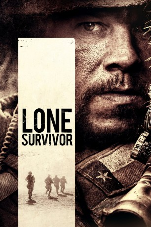 
 IMDB-Wertung: 7.5 / 10
IMDB-Wertung: 7.5 / 10  Metascore: 60
Metascore: 60 
Im Jahr 2005 ist das Elite-SEAL-Team 10 der US-Armee in Afghanistan stationiert. Die Stimmung schwankt zwischen Anspannung und übertriebener Ausgelassenheit. Als der Nachrichtendienst den Aufenthaltsort des Taliban-Anführers Ahmed Shahd herausfindet, werden vier Mitglieder des Teams ausgewählt und am 28. Juni losgeschickt, den Terroristenführer zu neutralisieren. In der Planung klingt die Mission leicht und ungefährlich. Doch als die SEALs Marcus Luttrell, Mike Murphy, Matt Axelson und Danny Dietz am Einsatzort ankommen und sich verschanzen, um ihr Ziel ins Visier zu nehmen, werden sie von ein paar Ziegenhirten entdeckt. Sie nehmen die Zivilisten gefangen und nach einer kontoversen Beratung beschließt Luttrell in seiner Eigenschaft als Ranghöchster, die Afghanen laufen zu lassen. Die Soldaten können sicher sein, dass die Freigelassenen sie verraten werden, daher wollen sie schnell den Rückzug antreten - doch die Taliban schneiden ihnen den Weg ab…
Jahr: 2013
Dauer: 121 Minuten
FSK: 16
Land: USA Studio: Universal PicturesTonspuren: DTS - ,
Untertitel: Deutsch, Englisch, ,
Auflösung: 1080p (1920×800) Größe: 11980 MB
Genre: Action, Biographie, Drama, Thriller, Krieg
Regisseur:  Peter Berg
Peter Berg
Drehbuch: Peter Berg, Marcus Luttrell, Patrick Robinson
Soundtrack: Explosions in the Sky, Steve Jablonsky
Darsteller:
 Mark Wahlberg als Marcus Luttrell
Mark Wahlberg als Marcus Luttrell Taylor Kitsch als Michael Murphy
Taylor Kitsch als Michael Murphy Emile Hirsch als Danny Dietz
Emile Hirsch als Danny Dietz Ben Foster als Matt 'Axe' Axelson
Ben Foster als Matt 'Axe' Axelson Yousuf Azami als Shah
Yousuf Azami als Shah Ali Suliman als Gulab
Ali Suliman als Gulab- 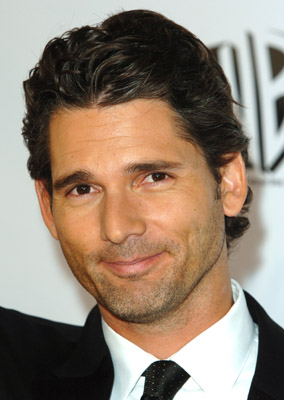 Eric Bana als Erik Kristensen
- 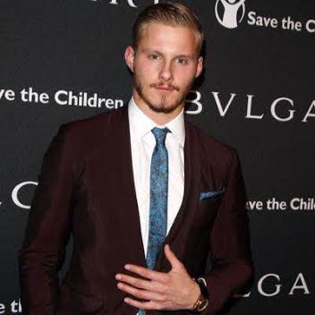 Alexander Ludwig als Shane Patton
- Rich Ting als James Suh
- 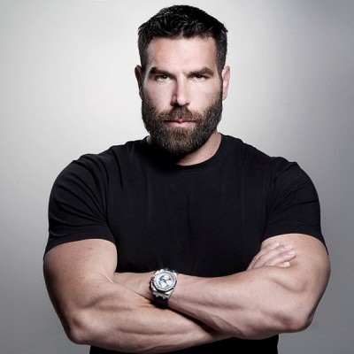 Dan Bilzerian als Healy
- 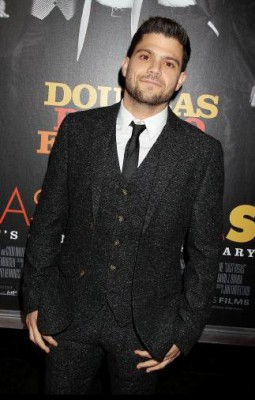 Jerry Ferrara als Hasslert
- Scott Elrod als QRF SEAL
- Gregory Rockwood als Chinook Pilot #1
 Josh Berry als Communication SEAL
Josh Berry als Communication SEAL- Eric Steinig als SEAL Lt.
- Justin Tade als CJSOTF Marine
- Sterling Jones als Bagram Comms Guy
- Jason Riggins als 50 Cal Gunner
- 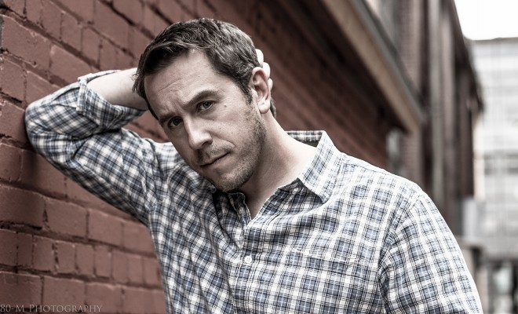 Matthew Page als Army Intel Guy
- 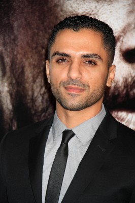 Sammy Sheik als Taraq
- Nicholas Patel als Goat Boy
 Rohan Chand als Gulab's Young Son
Rohan Chand als Gulab's Young Son- Samuel Cloud als JAG
- 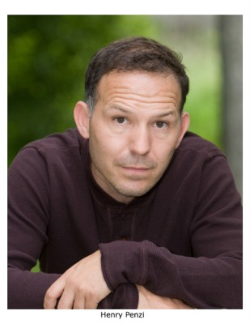 Henry Penzi als Penzi
- Michael P. Herrmann als Wallace
- Mikael Ayele als Gulab Villager , uncredited
 Peter Berg als Soldier , uncredited
Peter Berg als Soldier , uncredited- 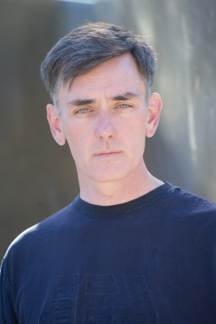 Timothy Holmes als Navy Seal , uncredited
- Cory Kapahulehua als Ranger , uncredited
- 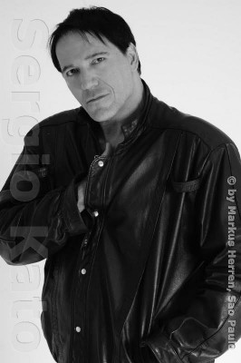 Sergio Kato als Navy Seal , uncredited
 Corey Large als SEAL Captain Kenney , uncredited
Corey Large als SEAL Captain Kenney , uncredited- Marcus Luttrell als Navy Seal , uncredited
- 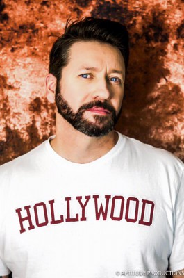 Frank Powers als Musselman SEAL , uncredited
- Diego Romero als Taliban Fighter , uncredited
- Michael Isaac Salman als Voice Actor , uncredited
- Rick Vargas als Crew Chief
- Ryan Kay als Chinook Pilot #2
- Patrick Griffin als Chinook Co-Pilot
- David Shepard als CJSOTF Commander
- Daniel Arroyo als Teenage Goat Boy
- Zarin Rahimi als Goat Man
- Anthony McKenzie als TOC Sr. Air Officer
- Brian Call als TOC SEAL
- Ishmael Antonio als Doctor
- Perparim 'Peter' Bici als Communication SEAL Perry
- Robert Loerke als Captain Jacoby
- Kurt Carlson als Captain Lovas
- Daniel Fulcoly als Lt. Andrews
- Paul Craig als 'EOD' Paul
- Zabiullah Mirzai als Zabi
Datei: X:\2013(I-M)\Lone Survivor (2013, FSK16, 1920x800).mkv seit 15.01.2015
Festplatte: HD 2013(I-Z)-2014(A-Z)
 Es gibt insgesamt 89 Filme in der Gruppe '2013(I-M)'
Es gibt insgesamt 89 Filme in der Gruppe '2013(I-M)'